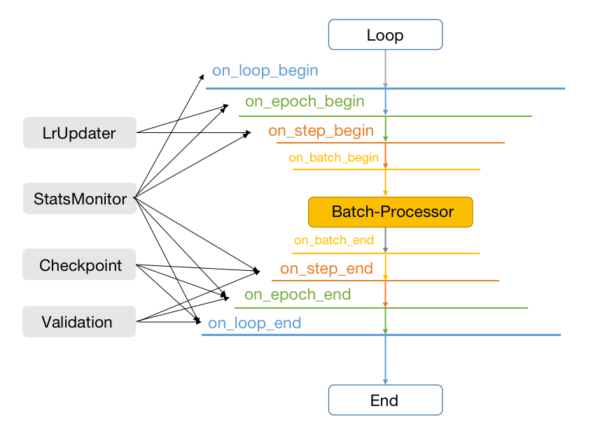
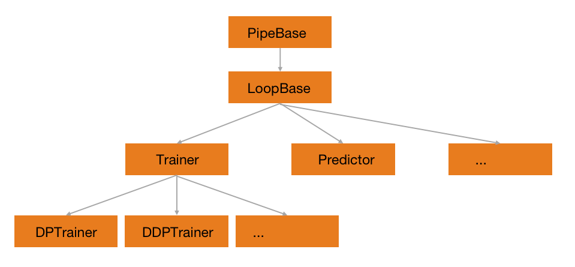

执行引擎¶
在上一小节框架的介绍中，可以发现所有的Data，Model，Callback等子模块构建完成之后，最终都会统一放到Engine中来完成执行。因此Engine是整个HAT的执行引擎，其重要性不言而喻。
在HAT中，Engine定义了训练和预测的整个Pipeline。对于任何一个深度学习的项目，对给定的模型完成训练和预测的任务是必须要完成的事情。因此本小节主要介绍HAT中的Engine模块是如何实现的。
Engine的执行流程¶

整个HAT的Engine中，最基础的PipeBase定义了所有的Callbacks可操作的运行阶段，而LoopBase定义了所有Engine的基础执行流程。如上图所示，整个Engine的执行流程也就是由丰富的Callbacks和与模型相关的Processor处理两部分组成。
所有Callbacks可操作的运行阶段，总共可以分为on_loop_begin，on_epoch_begin，on_step_begin，on_batch_begin，on_batch_end，on_step_end，on_epoch_end，on_loop_end八个阶段。八个阶段的执行顺序如上图所示，用户可以根据自己的需要，在不同的阶段使用不同的Callback，当然同一个Callback也可以用在不同的阶段。比如常见的LrUpdater可以在on_epoch_begin和on_step_begin这两个阶段使用，其他部分Callback的作用范围亦可如图所示。
BatchProcessor则负责当前Batch中数据和模型的运行方式，包含模型常见的基本操作，如forward和backward等。除此之外，还有部分grad的更新操作也会被定义在这里。需要说明的是，在一些复杂的任务训练过程中，BatchProcessor也要求能做到更多轮次的迭代和更加丰富的grad操作。
Engine结构¶

以LoopBase为基础，可以派生出丰富的执行引擎，如上图的Engine关系图所示。
按照功能划分，LoopBase可以派生出以训练为主的Trainer和以预测为主的Predictor。Trainer负责所有和训练相关的流程，一般的深度学习相关的训练都需要用到。Predictor负责和预测相关的流程，常用的使用场景如Validation等。
按照执行方式的不同，训练方式可以派生出不同的Trainer，如以torch.nn.parallel.DistributedDataParallel为基础的DistibutedDataParallelTrainer，以torch.nn.DataParallel为基础的DataParallelTrainer等等。不同的执行方式也需要不同的启动方式，具体可以参考不同Trainer中的launcher。